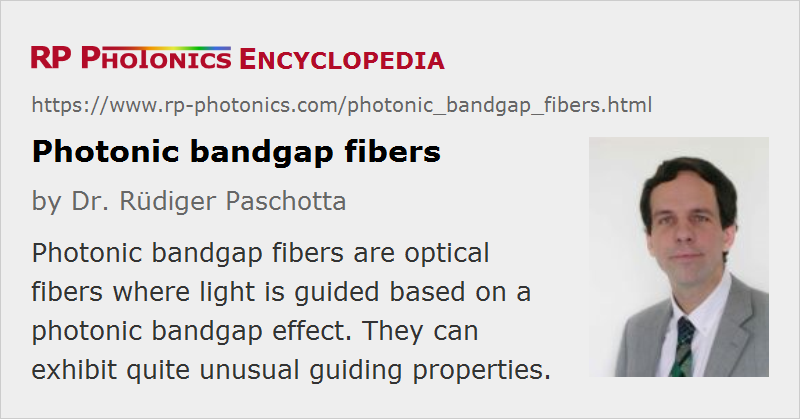

Photonic Bandgap Fibers
Definition: optical fibers where light is guided based on a photonic bandgap effect
More general terms: photonic crystal fibers, hollow-core fibers
German: Fasern mit photonischer Bandlücke
Category: fiber optics and waveguides
How to cite the article; suggest additional literature
Author: Dr. Rüdiger Paschotta
Photonic bandgap fibers are optical fibers where a photonic bandgap effect rather than a core region with increased refractive index is utilized for guiding light. Essentially, a kind of two-dimensional Bragg mirror is employed. Such a guiding mechanism normally works only in a limited wavelength region.
The earliest realization of such fibers, called Bragg fibers, was based on concentric rings with different refractive index [1]. Later, a special type of photonic crystal fiber has been developed, which also implements guidance with a photonic bandgap [3, 6], but in this case based on tiny air holes.
The refractive index of the core itself can be lower than that of the cladding structure. The core can even be hollow (→ hollow-core fibers), so that its refractive index is that of air (close to 1). As most of the light is then propagating in air rather than in glass (air-guiding fibers), such kinds of hollow-core photonic bandgap fibers may be used for guiding light in spectral regions where the absorption in the glass is relatively high. For example, light from a CO2 laser may be guided. Also, hollow-core fibers have a very weak nonlinearity, which makes them promising e.g. for the dispersive compression of ultrashort pulses with high peak power, or for the delivery of high-power laser beams. However, photonic bandgap fibers are generally more difficult to produce due to their tight fabrication tolerances, have a limited bandwidth for low-loss transmission, and often exhibit relatively high propagation losses. It is also substantially more difficult to understand and model their propagation characteristics, compared to index-guiding fibers.
Suppliers
The RP Photonics Buyer's Guide contains 3 suppliers for photonic bandgap fibers. Among them:
Questions and Comments from Users
Here you can submit questions and comments. As far as they get accepted by the author, they will appear above this paragraph together with the author’s answer. The author will decide on acceptance based on certain criteria. Essentially, the issue must be of sufficiently broad interest.
Please do not enter personal data here; we would otherwise delete it soon. (See also our privacy declaration.) If you wish to receive personal feedback or consultancy from the author, please contact him e.g. via e-mail.
By submitting the information, you give your consent to the potential publication of your inputs on our website according to our rules. (If you later retract your consent, we will delete those inputs.) As your inputs are first reviewed by the author, they may be published with some delay.
Bibliography
| [1] | P. Yeh, A. Yariv, and E. Marom, “Theory of Bragg fiber”, J. Opt. Soc. Am. 68 (9), 1196 (1978), doi:10.1364/JOSA.68.001196 |
| [2] | C. M. de Sterke et al., “Differential losses in Bragg fibers”, J. Appl. Phys. 76 (2), 680 (1993), doi:10.1063/1.357811 |
| [3] | T. A. Birks et al., “Full 2-d photonic bandgaps in silica/air structures”, Electron. Lett. 31, 1941 (1995), doi:10.1049/el:19951306 |
| [4] | J. Broeng et al., “Highly increased photonic band gaps in silica/air structures”, Opt. Commun. 156, 240 (1998), doi:10.1016/S0030-4018(98)00470-2 |
| [5] | Y. Fink et al., “A dielectric omnidirectional reflector”, Science 282, 1679 (1998), doi:10.1126/science.282.5394.1679 |
| [6] | R. F. Cregan et al., “Single-mode photonic band gap guidance of light in air”, Science 285, 1537 (1999) (first hollow-core PCF), doi:10.1126/science.285.5433.1537 |
| [7] | S. Johnson et al., “Low-loss asymptotically single-mode propagation in large-core OmniGuide fibers”, Opt. Express 9 (13), 748 (2001), doi:10.1364/OE.9.000748 |
| [8] | K. Saitoh and M. Koshiba, “Photonic bandgap fibers with high birefringence”, IEEE Photon. Technol. Lett. 14, 1291 (2002), doi:10.1109/LPT.2002.801045 |
| [9] | S. Guo et al., “Comparative analysis of Bragg fibers”, Opt. Express 12 (1), 198 (2004), doi:10.1364/OPEX.12.000198 |
| [10] | P. J. Roberts et al., “Ultimate low loss of hollow-core photonic crystal fibres”, Opt. Express 13 (1), 236 (2005), doi:10.1364/OPEX.13.000236 |
| [11] | G. Ren et al., “Low-loss all-solid photonic bandgap fiber”, Opt. Lett. 32 (9), 1023 (2007), doi:10.1364/OL.32.001023 |
| [12] | S. Février et al., “High-power photonic-bandgap fiber laser”, Opt. Lett. 33 (9), 989 (2008), doi:10.1364/OL.33.000989 |
| [13] | Z. Várallyay et al., “Photonic bandgap fibers with resonant structures for tailoring the dispersion”, Opt. Express 17 (14), 11869 (2009), doi:10.1364/OE.17.011869 |
| [14] | W. Li et al., “151 W monolithic diffraction-limited Yb-doped photonic bandgap fiber laser at ∼978 nm”, Opt. Express 27 (18), 24972 (2019), doi:10.1364/OE.27.024972 |
See also: hollow-core fibers, photonic crystal fibers, fibers
and other articles in the category fiber optics and waveguides
|  |
If you like this page, please share the link with your friends and colleagues, e.g. via social media:
These sharing buttons are implemented in a privacy-friendly way!